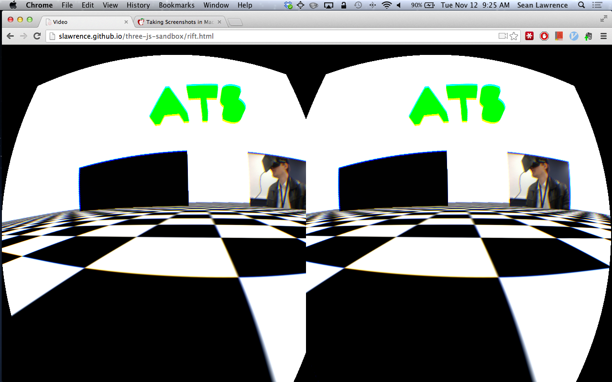

Team "Rift Something Something"
Members: Sean Lawrence and Yoshi Sono
Goal: Create something in the browser that can be interfaced with the Oculus Rift
Idea: Watch online videos in the browser in the rift
Technologies
- Webgl - js API for 3d and 2d graphics in the browser. Based on OpenGL.
- vr.js - Chrome/FF plugin that exposes rift to js
- Three.js - Lightweight 3d js API built on webgl/html5
- Oculus Rift
Demo
Screenshot
